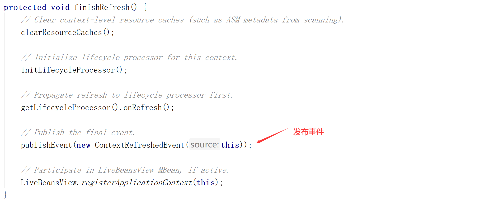
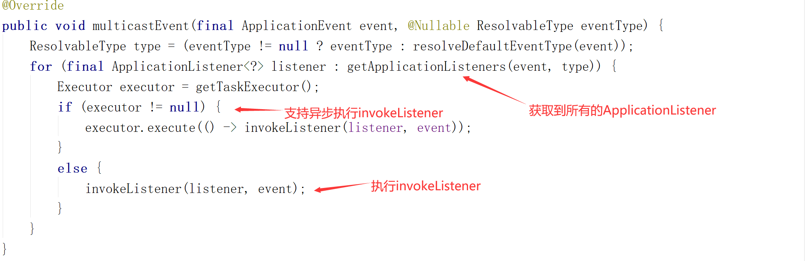
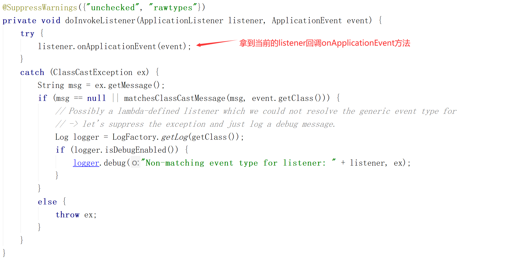

ApplicationListener是Spring事件机制的一部分，与抽象类ApplicationEvent类配合来完成ApplicationContext的事件机制。
如果容器中存在ApplicationListener的Bean，当ApplicationContext调用publishEvent方法时，对应的Bean会被触发。这一过程是典型的观察者模式的实现。
源码：
@FunctionalInterface
public interface ApplicationListener<E extends ApplicationEvent> extends EventListener {
/**
* Handle an application event.
* @param event the event to respond to
*/
void onApplicationEvent(E event);
}以Spring的内置事件ContextRefreshedEvent为例，当ApplicationContext被初始化或刷新时，会触发ContextRefreshedEvent事件，下面我们就实现一个ApplicationListener来监听此事件的发生。
@Component // 需对该类进行Bean的实例化
public class LearnListener implements ApplicationListener<ContextRefreshedEvent> {
@Override
public void onApplicationEvent(ContextRefreshedEvent event) {
// 打印容器中出事Bean的数量
System.out.println("监听器获得容器中初始化Bean数量：" + event.getApplicationContext().getBeanDefinitionCount());
}
}在容器创建完成后，在finishRefresh()方法中发布了一个事件——ContextRefreshedEvent

我们来具体看一下这个事件是如何发布的
protected void publishEvent(Object event, @Nullable ResolvableType eventType) {
Assert.notNull(event, "Event must not be null");
// Decorate event as an ApplicationEvent if necessary
ApplicationEvent applicationEvent;
if (event instanceof ApplicationEvent) {
applicationEvent = (ApplicationEvent) event;
}
else {
applicationEvent = new PayloadApplicationEvent<>(this, event);
if (eventType == null) {
eventType = ((PayloadApplicationEvent<?>) applicationEvent).getResolvableType();
}
}
// Multicast right now if possible - or lazily once the multicaster is initialized
if (this.earlyApplicationEvents != null) {
this.earlyApplicationEvents.add(applicationEvent);
}
else {
//获取事件的派发器
getApplicationEventMulticaster().multicastEvent(applicationEvent, eventType);
}
// Publish event via parent context as well...
if (this.parent != null) {
if (this.parent instanceof AbstractApplicationContext) {
((AbstractApplicationContext) this.parent).publishEvent(event, eventType);
}
else {
this.parent.publishEvent(event);
}
}
}派发事件：getApplicationEventMulticaster().multicastEvent(applicationEvent, eventType);

这里的执行invokeListener主要是来回调listener的接口方法

以上就是spring中事件发布的流程。
在事件发布的过程中，有一步是获取事件的派发器，那么事件派发器是在哪里创建的呢？
实际上在容器初始化时，执行了initApplicationEventMulticaster()这个方法，来为容器初始化事件派发器。
protected void initApplicationEventMulticaster() {
ConfigurableListableBeanFactory beanFactory = getBeanFactory();
//先来判断容器中有没有applicationEventMulticaster
if (beanFactory.containsLocalBean(APPLICATION_EVENT_MULTICASTER_BEAN_NAME)) {
this.applicationEventMulticaster =
beanFactory.getBean(APPLICATION_EVENT_MULTICASTER_BEAN_NAME, ApplicationEventMulticaster.class);
if (logger.isTraceEnabled()) {
logger.trace("Using ApplicationEventMulticaster [" + this.applicationEventMulticaster + "]");
}
}
else {
//如果没有则创建一个派发器
this.applicationEventMulticaster = new SimpleApplicationEventMulticaster(beanFactory);
beanFactory.registerSingleton(APPLICATION_EVENT_MULTICASTER_BEAN_NAME, this.applicationEventMulticaster);
if (logger.isTraceEnabled()) {
logger.trace("No '" + APPLICATION_EVENT_MULTICASTER_BEAN_NAME + "' bean, using " +
"[" + this.applicationEventMulticaster.getClass().getSimpleName() + "]");
}
}
}APPLICATION_EVENT_MULTICASTER_BEAN_NAME：
public static final String APPLICATION_EVENT_MULTICASTER_BEAN_NAME = "applicationEventMulticaster";refresh()方法中执行了registerListeners()来给容器中注册监听器
protected void registerListeners() {
// Register statically specified listeners first.
for (ApplicationListener<?> listener : getApplicationListeners()) {
getApplicationEventMulticaster().addApplicationListener(listener);
}
// Do not initialize FactoryBeans here: We need to leave all regular beans
// uninitialized to let post-processors apply to them!
//根据类型获取所有的监听器的Bean名称
String[] listenerBeanNames = getBeanNamesForType(ApplicationListener.class, true, false);
for (String listenerBeanName : listenerBeanNames) {
//将监听器加入到派发器当中
getApplicationEventMulticaster().addApplicationListenerBean(listenerBeanName);
}
// Publish early application events now that we finally have a multicaster...
Set<ApplicationEvent> earlyEventsToProcess = this.earlyApplicationEvents;
this.earlyApplicationEvents = null;
if (earlyEventsToProcess != null) {
for (ApplicationEvent earlyEvent : earlyEventsToProcess) {
getApplicationEventMulticaster().multicastEvent(earlyEvent);
}
}
}除了实现ApplicationListener接口来完成事件监听以外，@EventListener这个注解也同样可以监听事件的发生
只需要将@EventListener标注在方法上面：
@EventListener(classes = {ApplicationEvent.class})
public void listen(ApplicationEvent applicationEvent){
System.out.println("监听到："+applicationEvent);
}